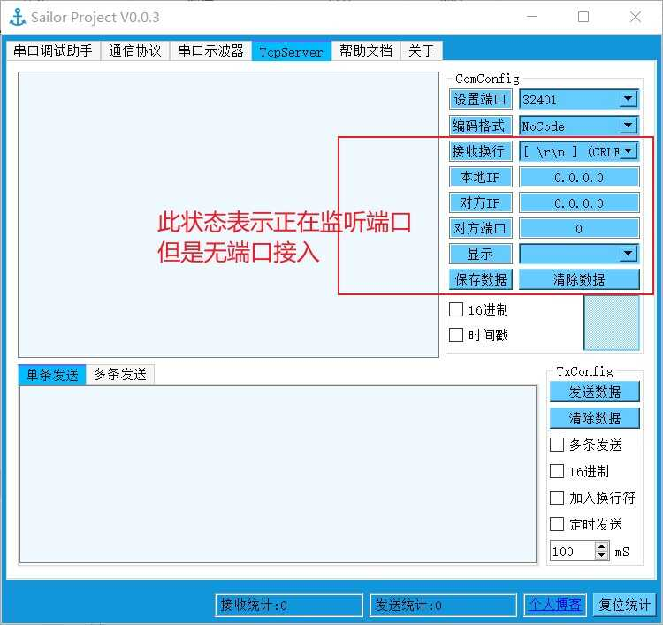
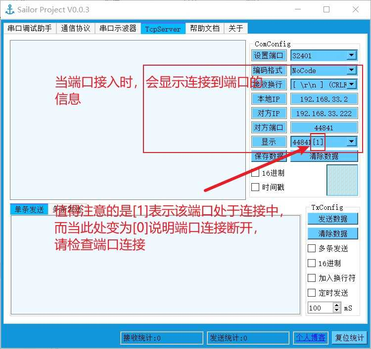
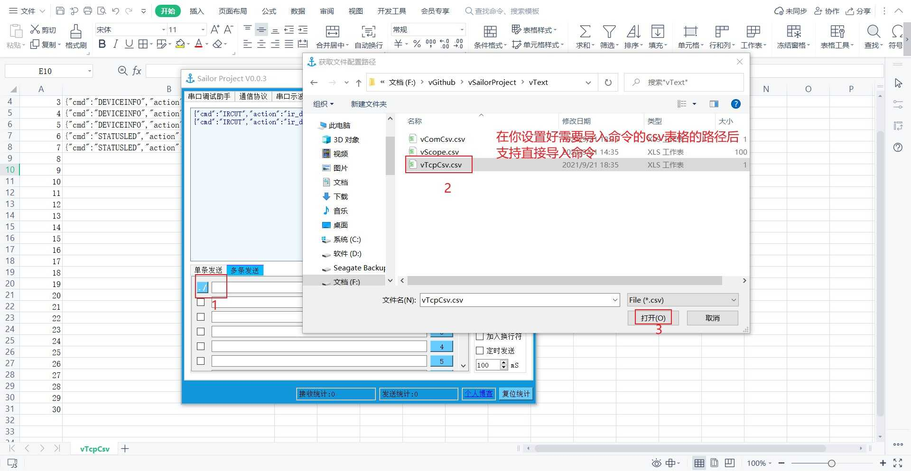
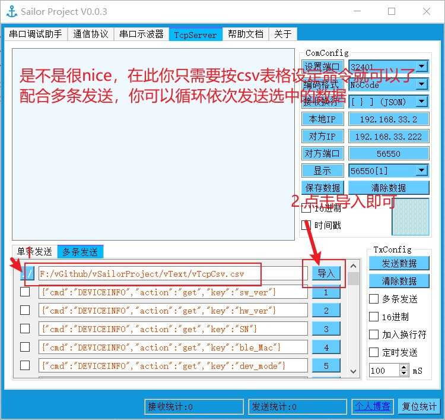
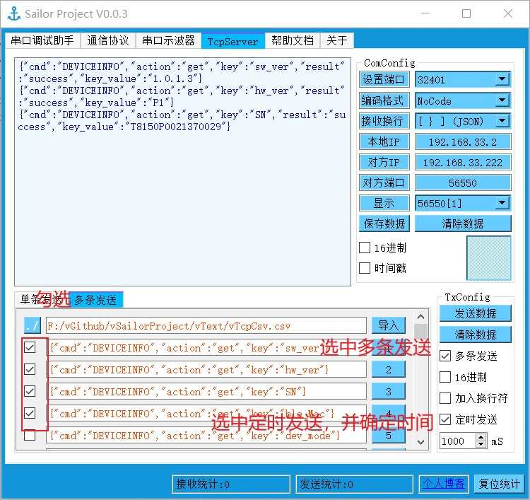
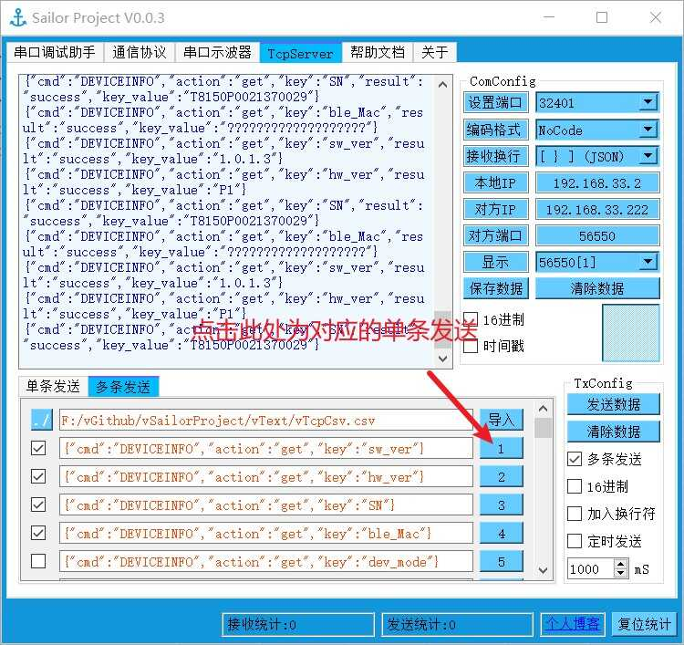

1. Sailor Project¶
提示
对于该教程而言，本人不会花过多的时间去说明该软件如何使用，而是建议你自己有更多的尝试
1.1. 最新版本¶
下载地址
参见
V0-0-3版本简约黑色主题 : vSailorProject-V0-0-3-black .
参见
V0-0-3版本默认主题 : vSailorProject-V0-0-3-normal .
1.2. 代码完全开源¶
参见
vSailorProjec项目地址 : vSailorProjec .
重要
使用 GPL 开源协议，严禁用于商业用途

{kind=link}
{kind=link}
{kind=link}
{kind=link}
{kind=link}
1.4. Sailor Project功能说明¶
1.4.1. 功能¶
{kind=link}
{kind=link}
1.4.2. 操作说明¶
提示
注意由于QT自带文本显示窗口加载大量数据后会造成软件卡顿，现解决方案为设定一个显示缓冲区，在有刷新数据阶段（即串口接收数据阶段），如果需要保持刷新状态（即实时显示接收得数据），则仅显示显示缓冲区的内容，你可以使用鼠标移动向上滚动条，停止数据刷新，同时当你向上移动滚动条到一定程度，便会开始加载所有数据，如果你想再次触发实时刷新数据状态，只需要将滚动条移动到最低端，并确保有数据接收。
重要
由于保存数据为显示界面的数据，如果出于刷新状态，则无法保存所有数据，正确的做法是关闭串口后，将滚动条移动到最顶端，加载全部数据，然后保存窗口数据。
1.4.3. 串口调试助手功能¶
支持传统的串口调试助手的基本收发功能，同时可以刷新大量的数据而不卡顿
支持保存接收的数据
支持最大200条可编辑指令的设置，并用于多条发送
支持定时器发送
支持换行符替换时间戳功能
支持较多的中文编码格式
值得注意的是支持Linux简单的串口调试
支持加载csv表格数据到200条可编辑指令
支持部分窗口配置的保存和重启恢复（前提是你不会删除配置文件）
…
{kind=link}
1.4.4. Seasky串口协议数据显示界面操作说明¶
-
SEASKY串口通信协议详细介绍
注解
为最大化提升效率，以及保证通信的可靠性，此处不适用printf方案，而是采用了自定义的通信协议，使用此工具需要你对CRC校验有一定的理解，能自行解读串口通信协议，如果完成了这部分协议的兼容，那么你将会发现此款串口示波器的强大之处
-
SEASKY串口通信协议典型案例
注解
当使能
协议使能后该界面开始工作当使能
发送使能后会以固定频率发送按协议打包好的数据在
协议使能时不可以设置数据名称和单位，仅在协议使能未被按下时可以设定点击
模块选择下拉菜单的增加模块可以添加模块，此部分功能用于存储数据名称和单位，并将模块名称和单位保存到ModulePath/路径的.ini文件中，如果需要删除模块则删除对应模块的.ini文件即可
提示
注意由于QT自带文本显示窗口加载大量数据后会造成软件卡顿，现解决方案为设定一个显示缓冲区，在有刷新数据阶段（即串口接收数据阶段），如果需要保持刷新状态（即实时显示接收得数据），则仅显示显示缓冲区的内容，你可以使用鼠标移动向上滚动条，停止数据刷新，同时当你向上移动滚动条到一定程度，便会开始加载所有数据，如果你想再次触发实时刷新数据状态，只需要将滚动条移动到最低端，并确保有数据接收。
重要
由于保存数据为显示界面的数据，如果出于刷新状态，则无法保存所有数据，正确的做法是关闭串口后，将滚动条移动到最顶端，加载全部数据，然后保存窗口数据。
1.4.5. 波形显示界面操作说明¶
重要
该界面仍基于 Seasky串口协议，因此需要使能 协议使能 ，如果需要设定16位寄存器值，还需要使能 发送使能
注解
当鼠标移动到波形显示界面，并点击 鼠标右键 此时会弹出相应菜单，此时可以依次添加显示曲线，如果未添加对应曲线，就算有数据也不会显示
在有曲线的状态下，鼠标右键 ，可以删除所有曲线或者隐藏所有曲线，同时也可以触发
AUTO自动刷新Y轴坐标范围 ,``实时刷新`` 自动追踪最新数据待添加完曲线后，可以看到曲线名称和曲线的线性以及颜色显示窗口，当鼠标移动到此窗口后，点击 鼠标右键 可以调整此界面显示位置
当选中曲线后，移动鼠标，会有光标的自动追踪，将显示对应（x,y）坐标，如果超出曲线范围，则显示 0 ，在选中曲线时 点击 鼠标右键 可以删除或者隐藏选中曲线
鼠标双击
曲线名称可以设定曲线名称,选中曲线后 鼠标右键 可以设定曲线颜色当处于
静态界面时,如果移动鼠标选中 X轴 则鼠标滚轮转动只能调节 X轴 宽度，并只能拖动曲线在 X轴 上左右移动（鼠标左键 拖动）当处于
静态界面时,如果移动鼠标选中 Y轴 则鼠标滚轮转动只能调节 Y轴 宽度，并只能拖动曲线在 Y轴 上左右移动（鼠标左键 拖动）快捷键: 当按下 Ctrl+Alt+X 时,则鼠标滚轮转动只能调节 X轴 宽度，并只能拖动曲线在 X轴 上左右移动（鼠标左键 拖动）
快捷键: 当按下 Ctrl+Alt+V 时,则鼠标滚轮转动只能调节 Y轴 宽度，并只能拖动曲线在 Y轴 上左右移动（鼠标左键 拖动）
注意
实时刷新状态时，曲线会一直自动刷新 Y轴 并追踪最新数据，该状态可以向右拖动曲线退出静态界面状态时，曲线不会进行刷新，界面显示定时器关闭，此时可以通过 鼠标右键 进入实时刷新状态， 或自动刷新Y轴坐标范围X轴宽度只能手动调整
1.4.6. TCPServer界面¶
支持保存接收的数据
支持最大200条可编辑指令的设置，并用于多条发送
支持定时器发送
支持换行符替换时间戳功能
支持较多的中文编码格式
支持加载csv表格数据到200条可编辑指令
支持部分窗口配置的保存和重启恢复（前提是你不会删除配置文件）
…
     
{kind=link}
{kind=link}
{kind=link}
{kind=link}
{kind=link}
{kind=link}
{kind=link}
{kind=link}
{kind=link}
{kind=link}
{kind=link}
{kind=link}
重要
注意：导入命令词条的功能，务必按照格式添加，非常规的csv表格可能会导致无法识别的现象，同时，由于没有采用复杂的解析算法，所以不建议使用过于复杂的csv表格格式,tcp为 TcpCommand 同时序号务必为升序
{kind=link}
1.4.7. 帮助界面¶
协议部分相关说明
1.4.8. 关于¶
软件支持信息